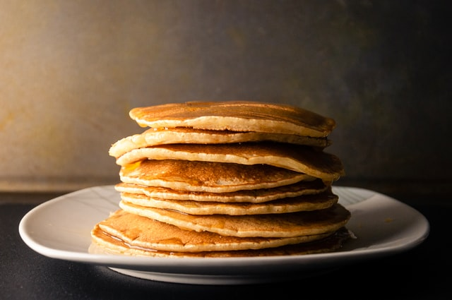

Pancake

Description
If you're looking to go away from microwaving frozen pancakes, then look
no further! This pancake recipe is as simple as it gets, made from a
batter of flour, milk, an egg, and baking powder. This recipe is a good
base for experimentation as well. Feel free to use different types of
flour, or add fruits or chocolate chips.
Ingredients
- 1 1/2 cups all-purpose flour
- 3 1/2 teaspoons baking powder
- 2 tablespoons sugar
- 1/2 teaspoon salt
- 1 1/4 cup milk
- 3 tablespoons butter
- 1 egg
Steps
- Heat a griddle or frying pan over medium-low heat.
- In a large bowl, mix together dry ingredients.
- Make a well in the dry mixture, and pour in egg, milk, and melted
butter. Mix until smooth.
- Heat an oiled griddle or frying pan over medium heat, and ladle batter
onto griddle or frying pan.
- Flip pancakes after bubbles rise to surface and the bottom is
browned.
- Cook until the second side is lightly browned.